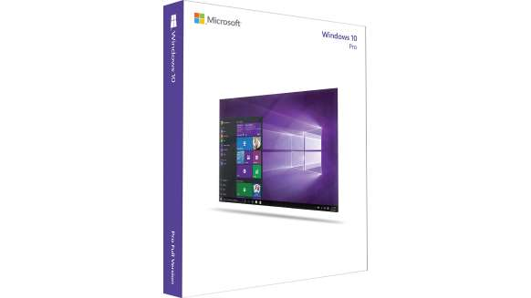

Windows
Office
Phone
About Us
Support
Windows
Office
Phone
About Us
Support
Connecting you with your business
Get Windows 10 Pro

Rs.14,999
Description
All the features of Windows 10 Home plus business functionality for encryption, remote log-in, creating virtual machines and more.
Right for business
Join your Domain.You can connect to your business or school Domain or Azure Active Directory to use network files, servers, printer and more.
Enhanced encryption.Get additional security with BitLocker to help protect your data with encryption and security management.
Remote log-in.Windows 10 enables you to log in with Remote Desktop to sign in and use your Pro PC while at home or on the road.
Virtual machines.Create and run virtual machines with Hyper-V so you can run more than one operating system at the same time on the same PC.
Your apps in the Store.Windows 10 lets you create your own private app section in the Windows Store for convenient access to company applications.
Requirements
Required 1 GHz processor or faster
Processor
Required 1 GB RAM for 32-bit; 2 GB for 64-bit
Memory
Required Hard Up to 20 GB available hard disk space
Disk Space
Required video 800 x 600 screen resolution or higher. DirectX® 9 graphics processor with WDDM driver
card
Confused between the two? Don't worry, we got you covered.
Now you can upgrade to Pro anytime you want.
Follow Microsoft